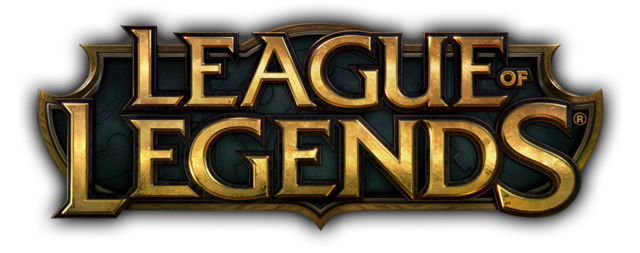
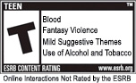

League of Legends es un juego competitivo en línea de ritmo frenético, que fusiona la velocidad y la intensidad de la estrategia en tiempo real (ETR) con elementos de juegos de rol.
¿Qué tipo de juego es?
En inglés su género es "Multiplayer Online Battle Arena" (MOBA) Fue desarrollado por Riot Games y es conocido como LoL, por sus siglas abreviadas
Desarrollo
Riot Games fue fundada por Brandon Beck (Riot Ryze) y Marc Merrill (Riot Tryndamere). Se asoció con Steve "Guinsoo" Feak, el diseñador anterior del popular mapa personalizado Defense of the Ancients de Warcraft III: The Frozen Throne, y Steve "Pendragon" Mescon, el administrador de la antigua base de apoyo oficial para el mapa (www.dota -allstars.com) para desarrollar League of Legends. Usando el DotA original creado por Eul (el creador oficial del mapa Defense of the Ancients para Warcraft III: Reign of Chaos) como base, Guinsoo diseñador de "DotA All-stars" insertando su propia mezcla de contenidos, ampliando considerablemente el número de los héroes, y la adición de recetas, numerosos artículos y varios cambios de juego. Guinsoo entonces pasó la versión 6 del mapa de DotA All-stars a un nuevo desarrollador, IceFrog. La idea de un sucesor espiritual de Defense of the Ancients que sería su propio juego independiente con su propio motor, en lugar de otro mod de Warcraft III, comenzó a materializarse a finales de 2005. League of Legends nació "cuando un par de miembros de la comunidad de Dota muy activos creía que el juego era tan divertido y tan innovadora que representaba el desove de un nuevo género y merecía ser su propio juego profesional con características significativamente mejoradas y sus alrededores- servicios de juegos ". Riot Games abrió oficialmente su cargo en septiembre de 2006, y en la actualidad cuenta con cerca de 100 personas que trabajan en League of Legends ", incluyendo su plataforma tecnológica robusta para atender y manejar el juego, así como un equipo dedicado a las relaciones con la comunidad." Según Marc Merrill, al crear los distintos campeones en el juego, en vez de dejar la creación de campeones a unas pocas personas, decidieron abrir el proceso de creación del campeones para todos en la compañía con base en una plantilla donde podían votar en el que campeones hicieron en el juego. El juego estaba en una beta cerrada desde el 10 de abril de 2009 al 22 de octubre de 2009. A continuación, la transición a la beta abierta hasta el lanzamiento. En marzo de 2013, Riot Games lanzó una versión beta de un cliente de OS X, además de su cliente de Windows.
Requisitos mìnimos
- Procesador a 2 GHz
- 1 GB de RAM (Se recomiendan 2 GB de RAM o más para Windows Vista y Windows 7)
- 8 GB de espacio libre en el disco duro
- Tarjeta gráfica compatible con Shader 2.0
- Resoluciones de pantalla hasta 1920x1200
- Compatible con DirectX v9.0c o superior
- Windows XP (solo Service Pack 3), Windows Vista, Windows 7, Windows 8 o Windows 10
Mejores jugadores de League of Legends